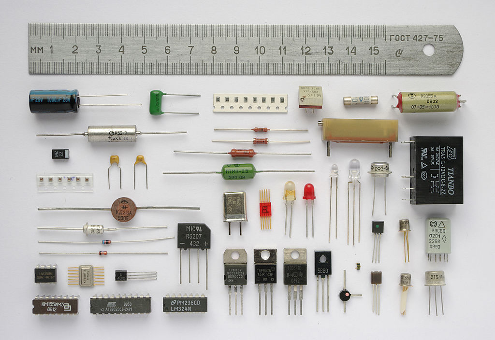
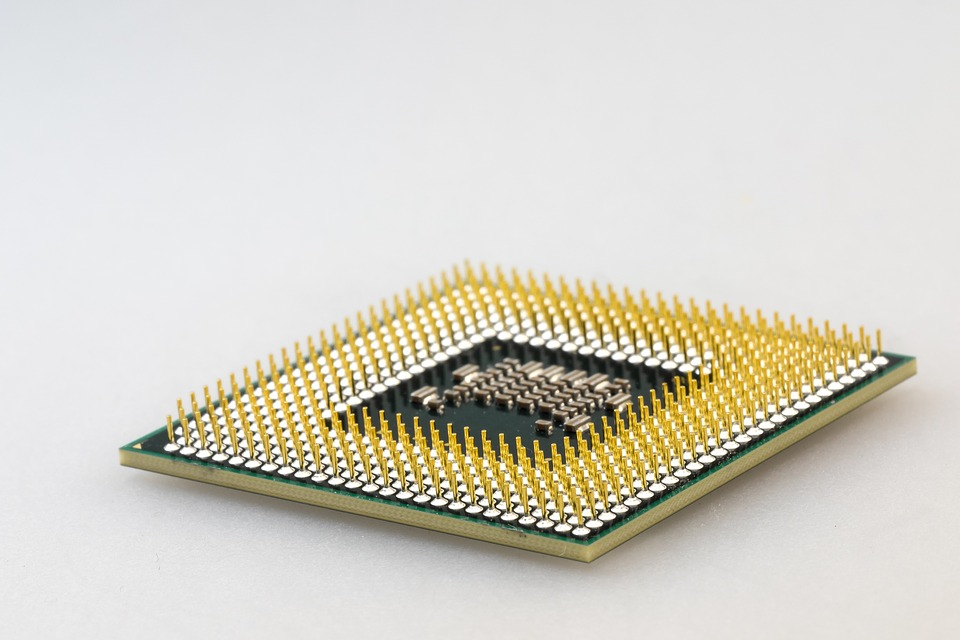
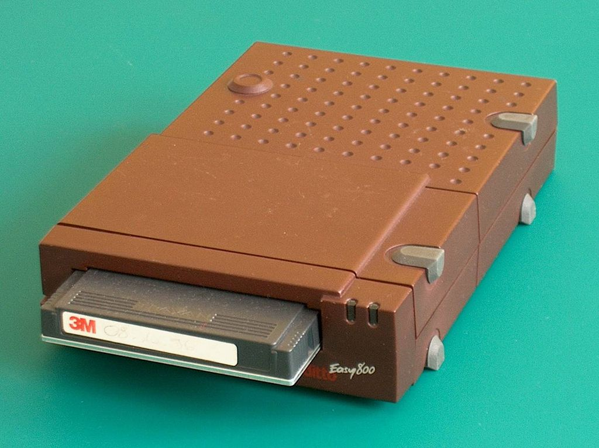
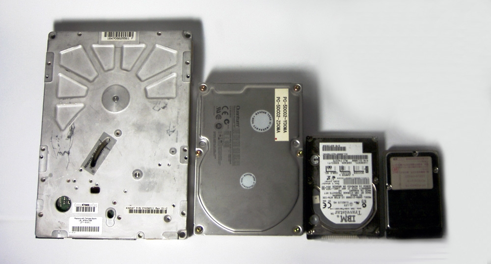
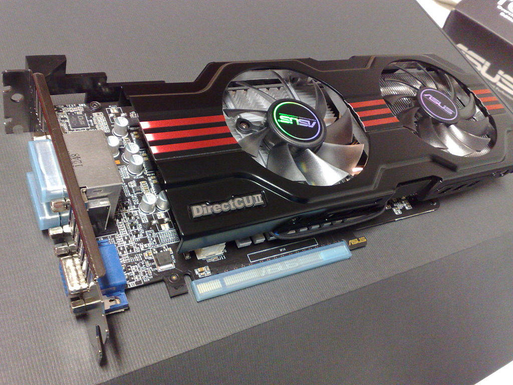

Железо
Электронные вычислительные устройства (hardware)
Этот раздел не претендует на экспертную литературу - просто основные моменты
Все современные электронные устройства - это довольно сложные системы созданные из базовых электронных компонентов. Если вам интересна данная область то можете начать с любительской электроники и разобраться в ней поглубже.

Вычислительные устройства состоят из кристалла кремния, кристалл создан искусственно слой за слоем, при особом воздействии на слой кремния возможно преобразовать отдельные атомы слоя в полупроводники из которых создают диоды и транзисторы а в свою очередь из них строят более сложные структуры, такие как триггеры, логические элементы, счетчики и другие элементы. После слои совмещают и получают кристалл кремния - интегральную микросхему.
Процессы, сами элементы и способы их производства - это коммерческие секреты и для того чтобы узнать детали нужно быть гением в фирме, которая создает эти схемы.
Основные элементы правда известны:
- Триггер - это такой элемент который имеет два состояния - включено и выключено что позволяет хранить одно бинарное число - bit (binary digit) - единица или ноль.
- Инвертор - меняет значение бита (1 стала 0 или наоборот)
- Регистр - хранит в себе несколько битов информации и состоит из триггеров
- Сумматор - суммирует значение из нескольких битов
Так что любой современный компьютер / смартфон / сервер / чип умеет только получать электрические сигналы, преобразовывать их в биты и суммировать их.
На основе суммы создаются операции вычитания, умножения и даже деления. Здесь у нас есть и первая проблема всех электронных устройств - мы можем мгновенно вычитать, складывать и умножать а вот деление нам доступно только нацело. Периодические числа вроде 1/3 нам доступны только до определенной точности, однако в большинстве случаев её хватает.
В итоге в одном кристалле мы имеем возможность сохранять биты, перемещать их и выполнять операции над ними.
Так работают каркуляторы и некоторые чипы.
Для более сложных и интересных вещей используются модульные системы из нескольких устройств - это наши компьютеры / телефоны / умные часы / умные телевизоры и прочая утварь.
Oсновные компоненты компьютеров
compute - вычислять, computer - вычислитель
Компьютер состоит как минимум из 4-х основных компонентов
- CPU или процессор
- RAM или оперативная память
- Стример/HDD/SSH или другая холодная память
CPU
Первый элемент это процессор - устройство которое принимает биты информации и команды для работы с ними и возвращает результаты.

Для понимания всего процесса создания компьютеров вернемся к истории.
Есть два вида архитектуры процессора - первая это фон-неймоновская где данные и команды передаются по одной шине, и гарвардская где есть две шины - одна для данных и вторая для команд.
В первом случае мы можем ввести данные и команды вместе, во втором нам нужно синхронизировать команды и данные что не просто. Сейчас наибольшая часть устройств построены на фон-неймоновской архитектуре где данные и команды идут в одном потоке.
Для того чтобы различать данные и команды для процессора создают систему команд. Так как процессор принимает только двоичную информацию - то некоторые данные представляют собой команды.
Для получения и обработки данных нам нужно получить поток данных и команд из какого-либо источника. Изначально команды и данные вводили напрямую из устройств чтения вроде перфокарт или клавиатуры и получали готовый результат. Но это достаточно не удобно - каждый раз для работы с компьютером приходилось набирать одни и те-же команды для работе - причем в виде единиц и нулей.
Программа это набор команд - кэп
Память
Чтобы не вводить каждый раз одни и те-же команды инженеры создали устройства ввода и хранения на магнитных лентах. Теперь данные вместе с программами стало возможно хранить и использовать повторно.
Однако и тут у нас возникли проблемы данные и команды идут в одном наборе и для расчета по одной и той-же программе но с другими данными необходимо было переписывать ленту скорость работы ленты достаточно медленная

RAM
Для решения этих проблем была создана RAM (Random access memory) в которую процессор помещал данные и мог обращаться к любой части данных почти мгновенно. Это позволило сначала получить программу потом подождать ввода данных и после продолжить работу имея все данные под рукой.

RAM очень быстрая но энергозависимая, если нет электричества она не сохраняет в себе данные и даже если бы и могла - смысла в этом не много так как данные всегда разные.
В итоге у нас есть:
- горячая память с возможность обратиться к любой части программы или данных.
- холодная память для хранения программ и данных.
- устройства ввода для ввода данных
- процессор для их выполнения программ которые данные обрабатывают
RAM в принципе не изменилась до сих пор - есть разные поколения памяти но задача одна и та-же.
Холодная память тоже прогрессирует. У нас были и есть магнитные ленты, да в 2017 году вы можете купить ленточный носитель и хранить данные на лентах (очень много медленных данных) - удивительно правда?
Далее у нас есть магнитные диски HDD - которые до сих пор используются в некоторых дешевых ноутбуках или компьютерах.
SSD - по содержанию похожи RAM но не зависят от энергии и куда медленнее.

Далее для работы с графикой используются специальные устройства - графические процессоры (видеокарты). В процессорах для компьютера тоже есть графические сопроцессоры, но они медленнее и работают с графикой куда хуже. Сайты вы еще почитаете, а вот в игры вам не доступны.
Видео
Первые компьютеры имели консольный интерфейс где человек вводил команду и ждал её выполнения и получал ответ. Консоль сохранилась и до сих пор, например для работы на серверах, системного администрирования, да даже для того чтобы сделать эту книгу я использую консоль.
Консольные мониторы адаптированы для текста, они не имели цветов и подключались к первым графическим картам. Графическая карта необходима для вывода данных на экран.
Большинство современных компьютеров имеют встроенную графическую карту, которая работает с помощью процессора для чтения книг, работы с офисными пакетами этого почти достаточно, но если мы хотим работать с графикой, 3d или играми то нам нужно купить отдельную видеокарту.

Видеокарта это почти отдельный компьютер со своим процессором, памятью и платой заточенный для работы с видео. Помимо видео некоторые операции эффективно просчитывать на видео картах, так что её наличие это огромный плюс.
Материнские платы
Для объединения всех этих базовых модулей используются текстолитовые платы. В ноутбуках и персональных компьютерах эти платы (материнские платы) позволяют в какой-то мере менять компоненты, в телефонах пытаются сделать заменяемые модули (чтобы слабую дешевую камеру заменит на более производительную и дорогую или заменить разбитый экран не обращаясь в ремонт) но пока без особых успехов.
BIOS / UEFI
BIOS - Basic Input Output System Базовая система ввода вывода
UEFI - Unified Extensible Firmware Interface Универсальный расширяемый интерфейс прошивки
Для того чтобы включить и подготовить все устройства компьютера необходим небольшой набор программ от разработчиков самой платы и устройств.
Как только компьютер включается он проводит загружает из специального чипа на плате систему BIOS или UEFI.
Система проводит проверку оборудования и если есть неполадки, то компьютер не запустится и попытается донести до пользователя в чем проблема. Например если отсутствует процессор или память.
После того как проверка успешно прошла - базовая система загружает настройки работы аппаратуры и начинает поиск загрузчика согласно настройкам. На этом этапе можно зайти в BIOS/UEFI и настроить его.
В BIOS/UEFI можно указать с какого устройства мы будем запускать программы, настройки аппаратуры (например разогнать процессор на свой страх и риск), включить виртуализацию на уровне процессора или провести дополнительную диагностику.
Как только загрузка BIOS/UEFI закончена они передают управление загрузчику - который и указывает какую программу загрузить.
Итоги
- Все вычислительные устройства на кремнии оперируют битами (binary digit) (единица или ноль)
- Вычислительные устройства на кремнии содержат 3 компонента
- устройство ввода или хранения данных
- процессор или интегральную схему
- оперативную память (хотя-бы на уровне кэша процессора)
- В компьютерах существует базовая система настройки и диагностики
Интересные моменты
Существуют вычислительные устройства не на кремнии и с другими архитектурами например биокомпьютеры
В 2017 году все еще используются ленты
Через BIOS или UEFI можно включить компьютер через интернет